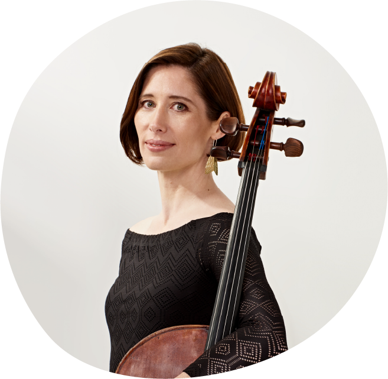
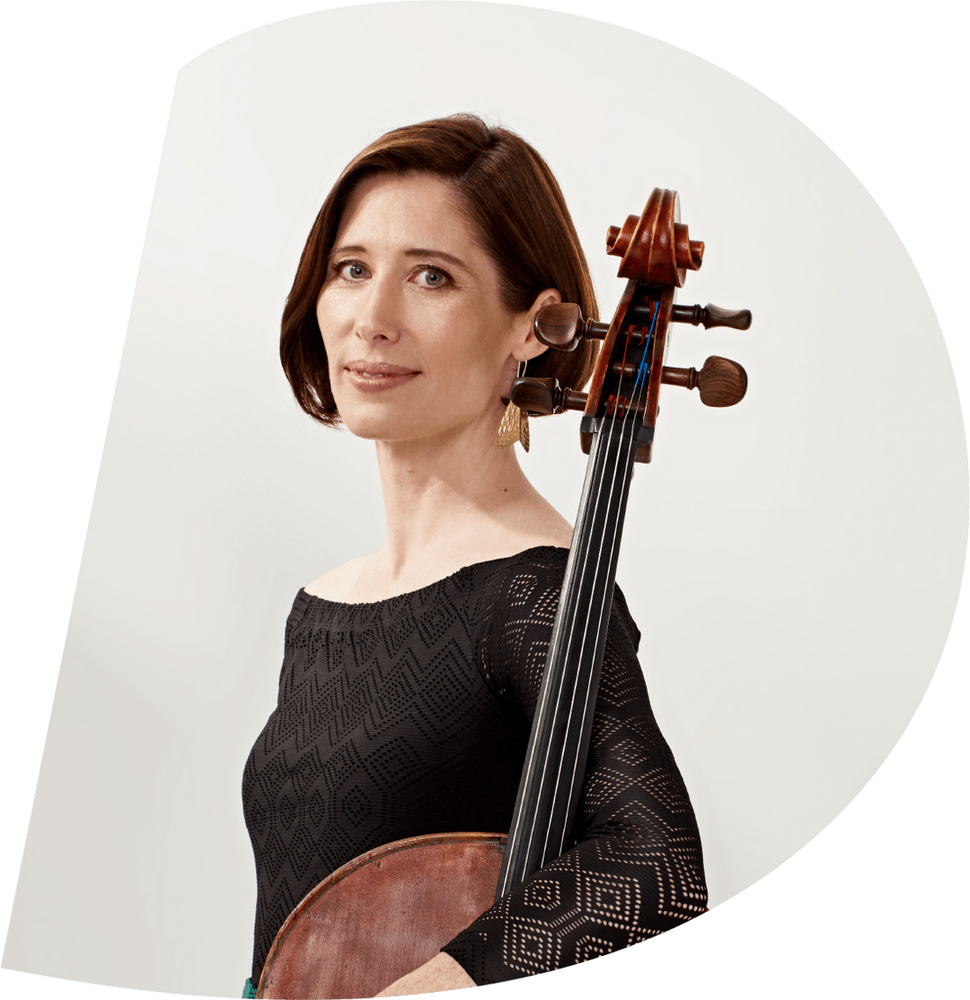
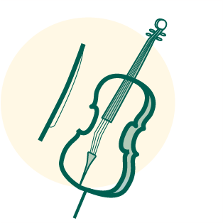

Josephine
Vains


Josephine Vains is a cellist, chamber musician and educator active across modern and historical fields. Performing around Australia and internationally to acclaim, she thrives on collaboration and exploring the emotional relationship between musician and audience.
As an educator at the Victorian College of the Arts Secondary School and the University of Melbourne, Josephine’s teaching focuses on each unique individual, to foster confidence, flair and stylistic curiosity.
AboutAreas of Expertise

Performing
Josephine is an Australian cellist and avid chamber musician with a performance career that encompasses modern and historical cello. An adventurous spirit has taken her to some far-flung concert venues - from an 1000 year old cave in the heart of China to mountain-top Bach in the French Alps.
She is a founding member of Firebird Trio, also performing to acclaim with Accademia Arcadia, Genesis Baroque, CellOZ, Gryphon Baryton Trio, Imaginista Quartet and more.
Educator
Passionate about education, Josephine is currently training the next generation of musicians at Victorian College of the Arts Secondary School, University of Melbourne. She is a regular tutor for Melbourne and Australian Youth Orchestra, Mt. Buller Chamber Music, Clunes Music, Melbourne Young Con Artists Academy, Pettman National Junior Academy (NZ) and for iartschool (China).
Josephine was thrilled to be present at the 2022 National Australian String Teachers Association Conference, on one of her favourite subjects, creating ‘speaking’ musical performance using Rhetoric.
Mentor
Josephine regularly mentors early and mid-career cello teachers, helping to illuminate their natural pedagogical strengths and guiding them to develop more rigour and inspiration in their own teaching. She also mentors her own students as they navigate their way through secondary and tertiary study, and beyond into the professional world.